Image warping
and mosaicing
Three scenes, five planar mosaics, two rectifications, and a cylindrical projection.
A.1 - Set 1: lecture hall
The lecture-hall sweep supplies three two-image subsets: right (1, 2), front (3, 4), and left (5, 6). Two additional three-image sets cover an outdoor courtyard (set2) and an indoor atrium (set3). All three images in each new set contribute to its panorama. Image 7 from the lecture hall is retained in the project but is not needed for these results.
Processing uses 1512 x 1006 RGB images. Images 1 and 2 use the supplied downsampled files; the other inputs were reduced from 6048 x 4024. Correspondences are measured in the processing resolution. A single homography assumes a common camera center or a planar scene; the photographs do not establish that the center was perfectly fixed.
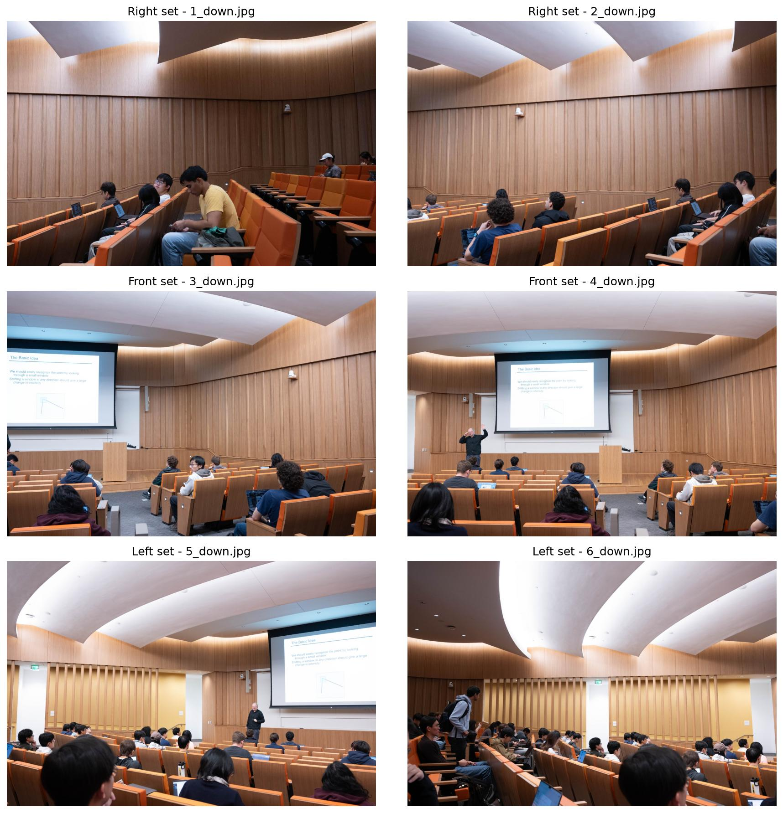
Set 2: courtyard / Set 3: atrium
Each row shows one three-image sweep in file-number order. The middle image is the reference. The six originals are 6048 x 4024; processing copies are 1512 x 1006. No original photograph was overwritten.
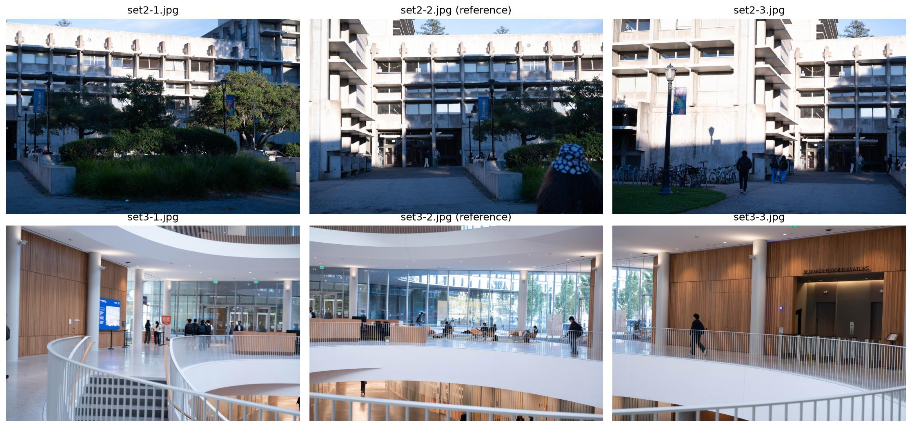
Three-image registration
Estimate H(1 to 2) and H(3 to 2) from their overlaps. Use [H(1 to 2), I, H(3 to 2)] to map all three images directly into a common reference canvas. This avoids chaining transforms or resampling an intermediate panorama.
People move between exposures in both sets. Atrium handrails and nearby plants can also exhibit parallax, so those regions may retain ghosting even when the background aligns.
A.2 - Recovering the homography
H maps a source point (x, y) into the reference image (u, v). The final homogeneous coordinate must be divided out.
H = [[a, b, c], [d, e, f], [g, h, 1]] u = (ax + by + c) / (gx + hy + 1) v = (dx + ey + f) / (gx + hy + 1) [x y 1 0 0 0 -ux -uy] q = u [0 0 0 x y 1 -vx -vy] q = v q = [a b c d e f g h]^T
N pairs produce a 2N x 8 system A q = rhs. All selected pairs are used. Coordinates are centered and scaled to a mean distance of sqrt(2) before constructing the system. This reduces the scale imbalance between pixel coordinates and their products.
A = U diag(S) V^T q = V ((U^T rhs) / S) H = inverse(T_destination) H_normalized T_source
This is an overdetermined algebraic least-squares fit implemented with NumPy SVD, not a geometric reprojection-error optimizer. The smallest singular value is checked to reject degenerate configurations. The final matrix is scaled so H[2,2] = 1 when possible.
Correspondence provenance and diagnostics
The original 16 desk correspondences are preserved. Lecture-hall sets use visually selected architectural landmarks with local patch refinement. For set2 and set3, SIFT descriptor proposals were filtered by a mutual ratio test and custom NumPy RANSAC, then a spatially distributed subset was saved. The notebook fits its own H to these fixed pairs; OpenCV is not needed to reproduce it. These assisted correspondences are not claimed to be student-clicked points or a complete Part B implementation.
Reprojection error is measured in destination pixels on the fitted points; it is a diagnostic, not independent test accuracy. The right view contains appreciable foreground/background disagreement, so a single H cannot align every depth perfectly.
Original notebook comparison
{
"fit_4_pairs_evaluated_on_all_16": {
"mean_error_px": 81.599,
"max_error_px": 434.24
},
"fit_16_pairs_evaluated_on_all_16": {
"mean_error_px": 3.826,
"max_error_px": 11.409
}
}The original matches are concentrated near the bottom of the image. A low fitting error in that region alone does not guarantee a good warp across the ceiling.
Correspondences and recovered H
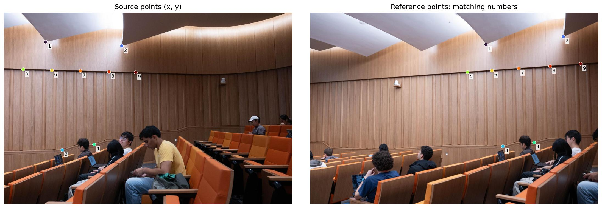
9 pairs; A shape = (18, 8). Mean error 1.344 px; RMS error 1.961 px; maximum 5.082 px.
Source to reference homography
[[ 0.525497 0.024018 741.972564] [ -0.181567 0.879514 59.817698] [ -0.000319 0.000009 1. ]]
Coordinate order is (x, y); array access is image[y, x]. The second image is the reference and keeps the identity transform.
Correspondences and recovered H
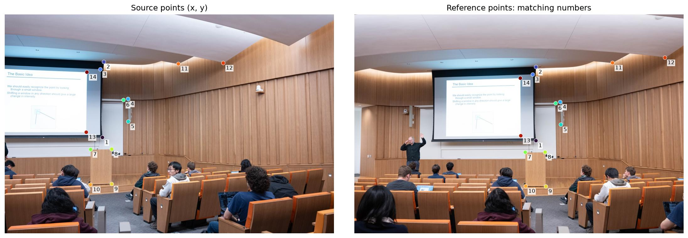
14 pairs; A shape = (28, 8). Mean error 0.173 px; RMS error 0.194 px; maximum 0.376 px.
Source to reference homography
[[ 0.693789 0.015201 437.713385] [ -0.119724 0.883032 81.141234] [ -0.000201 -0.000003 1. ]]
Coordinate order is (x, y); array access is image[y, x]. The second image is the reference and keeps the identity transform.
Correspondences and recovered H
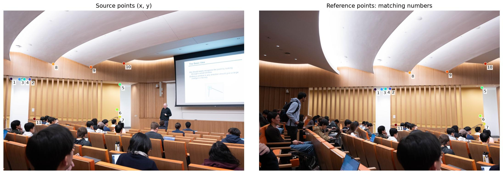
11 pairs; A shape = (22, 8). Mean error 0.199 px; RMS error 0.218 px; maximum 0.377 px.
Source to reference homography
[[ 0.525782 0.023317 675.548902] [ -0.207909 0.842122 131.598044] [ -0.000306 -0.000024 1. ]]
Coordinate order is (x, y); array access is image[y, x]. The second image is the reference and keeps the identity transform.
Outdoor courtyard: two registrations
set2-1 to set2-2
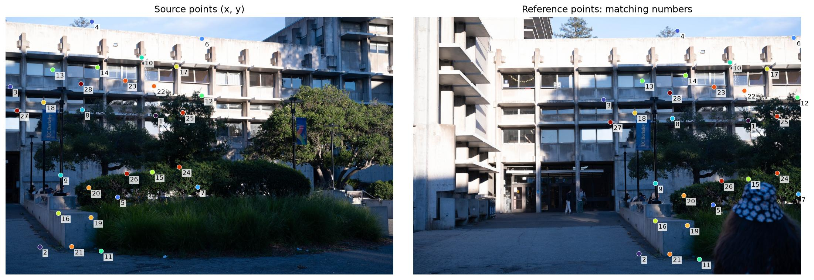
28 pairs; mean reprojection error 0.884 px; maximum 1.541 px.
[[ 0.811946 0.039341 711.017362] [ -0.095862 0.939138 67.133294] [ -0.000128 -0.000013 1. ]]
set2-3 to set2-2
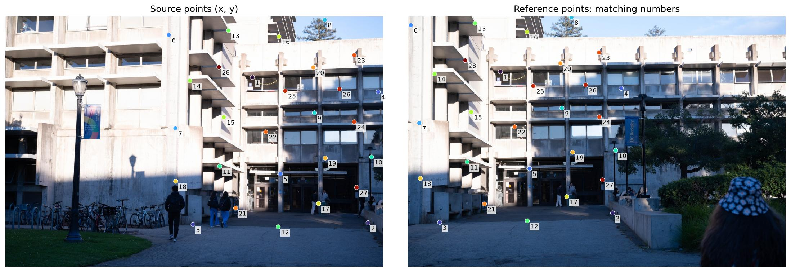
28 pairs; mean reprojection error 0.805 px; maximum 1.411 px.
[[ 1.210794 0.014194 -779.925494] [ 0.057869 1.151444 -85.959249] [ 0.000137 0.000009 1. ]]
Indoor atrium: two registrations
set3-1 to set3-2
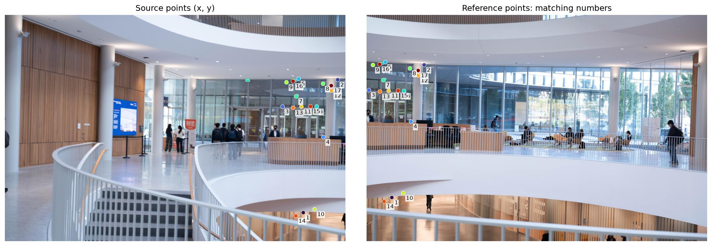
17 pairs; mean reprojection error 0.658 px; maximum 1.331 px.
[[ 1.578662 0.020674 -1938.8441 ] [ 0.159902 1.540295 -332.005566] [ 0.000375 0.000027 1. ]]
set3-3 to set3-2
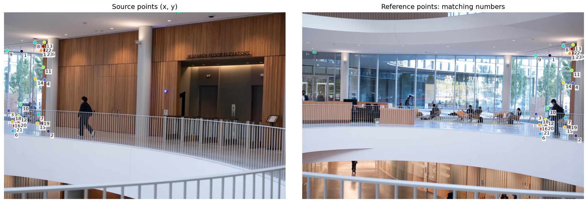
23 pairs; mean reprojection error 0.600 px; maximum 1.235 px.
[[ 0.653005 -0.010813 1240.507174] [ -0.117528 0.968987 35.329455] [ -0.00024 0.000004 1. ]]
A.3 - Inverse warping
Forward-transforming pixels can leave gaps. Instead, each destination pixel asks where its color comes from in the source:
[x_h, y_h, w]^T = inverse(H) [u, v, 1]^T x = x_h / w; y = y_h / w
The four source corners determine the full output bounds. Negative coordinates are retained with an explicit canvas origin. All mosaic images share the same bounds. A warp whose projective horizon crosses the source is rejected because its full projected extent is unbounded.
Nearest neighbor
Round the source coordinate to the nearest pixel center. This uses one color sample, is fast, and preserves hard pixel transitions, but diagonal edges can become jagged.
Bilinear
Let x0=floor(x), y0=floor(y), dx=x-x0, dy=y-y0. Combine the four neighboring samples:
I(x,y) = (1-dx)(1-dy) I[y0, x0]
+ dx(1-dy) I[y0, x1]
+ (1-dx)dy I[y1, x0]
+ dx dy I[y1, x1]Bilinear sampling costs more arithmetic and smooths pixel transitions. It cannot recover lost detail and is not an anti-aliasing filter for strong minification. At the last row/column, neighbors are clamped. Out-of-image samples remain invalid rather than being confused with valid black pixels.
Rectification setup
Four corners of a presumed planar rectangle are mapped to an axis-aligned output rectangle. Their order is top-left, top-right, bottom-right, bottom-left. The chosen output aspect ratios are display assumptions, not measured physical dimensions. Rectified outputs intentionally crop to the selected rectangle.
Measured interpolation runtime
Median of three complete warps after warm-up, on identical bounds. Timings are specific to this machine and output size.
| Example | Output | Nearest (s) | Bilinear (s) |
|---|---|---|---|
| Projection screen - image 4 | 900 x 570 | 0.0446 | 0.1250 |
| Wall panel - image 5 | 900 x 500 | 0.0369 | 0.1158 |
Projection screen - image 4
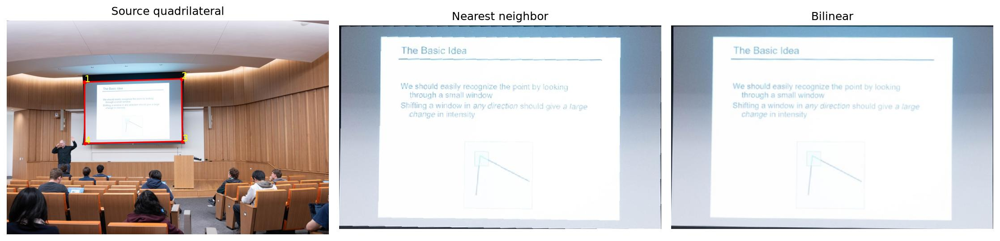
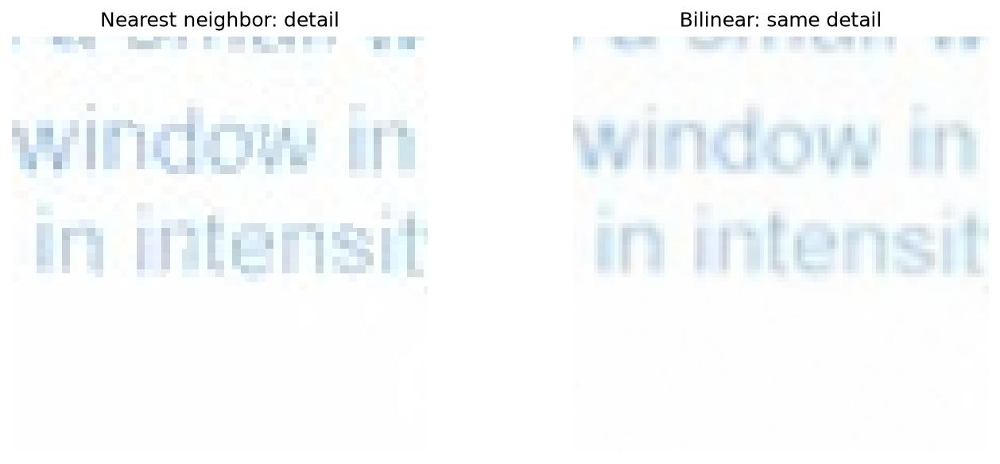
Nearest neighbor exhibits more abrupt pixel steps; bilinear produces smoother transitions and a slightly softer appearance. Compare these details at full size rather than relying on a resized overview.
Selected source corners
[[365, 289], [820, 274], [824, 568], [366, 578]]
Rectification H
[[ 2.052774 -0.007103 -747.20959 ] [ 0.066701 2.023251 -609.065351] [ 0.00004 0.000023 1. ]]
Wall panel - image 5
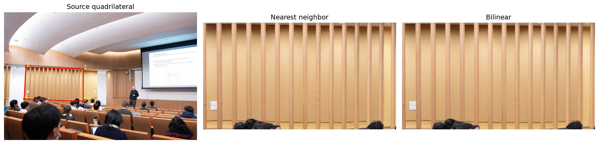
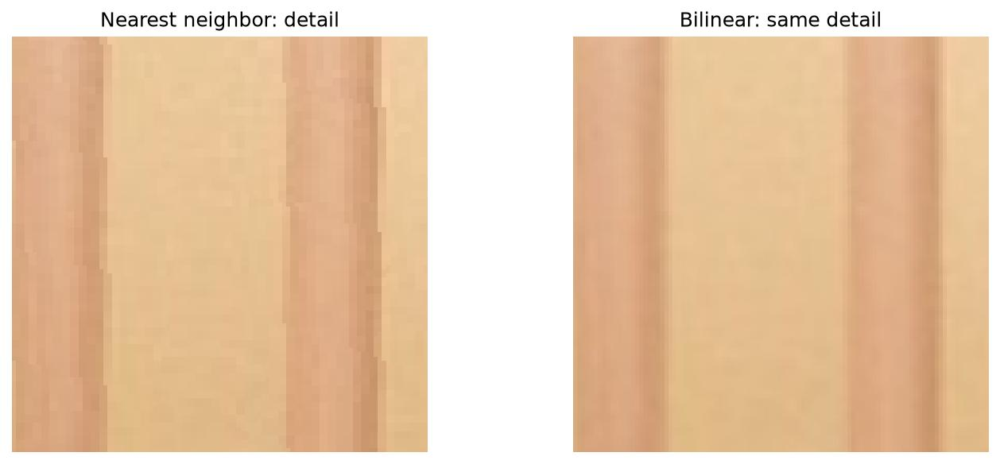
Nearest neighbor exhibits more abrupt pixel steps; bilinear produces smoother transitions and a slightly softer appearance. Compare these details at full size rather than relying on a resized overview.
Selected source corners
[[171, 431], [621, 447], [620, 700], [158, 681]]
Rectification H
[[ 2.119087 0.110193 -409.856944] [ -0.076522 2.152177 -914.502912] [ 0.000019 0.000113 1. ]]
Warp, then blend
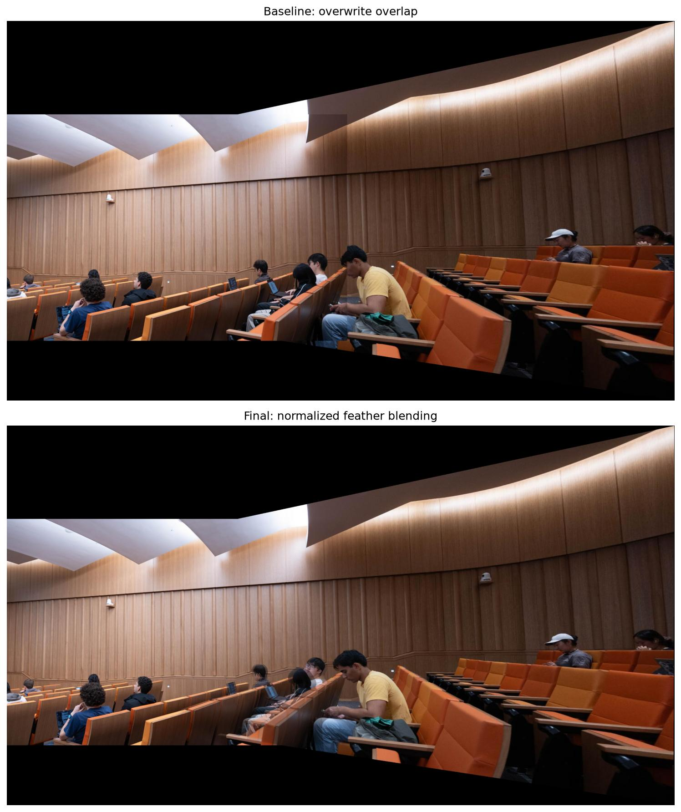
Output canvas: 2966 x 1687; origin (0, -415). Black exterior regions are outside all valid source images.
Each source receives an edge-distance weight, which is warped using the same H. The output is sum(weight x color) / sum(weight). Weight normalization preserves brightness and prevents dark fringes at boundaries. This reduces abrupt exposure seams but cannot remove moving people or parallax ghosting.
Warp, then blend
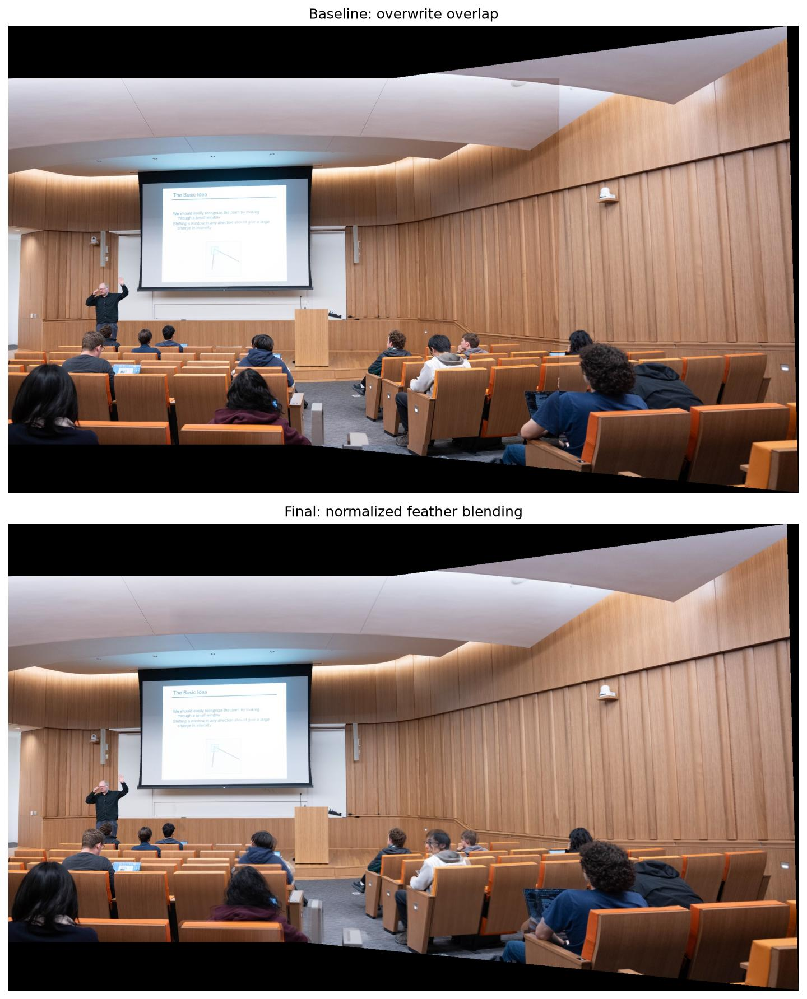
Output canvas: 2169 x 1283; origin (0, -144). Black exterior regions are outside all valid source images.
Each source receives an edge-distance weight, which is warped using the same H. The output is sum(weight x color) / sum(weight). Weight normalization preserves brightness and prevents dark fringes at boundaries. This reduces abrupt exposure seams but cannot remove moving people or parallax ghosting.
Warp, then blend
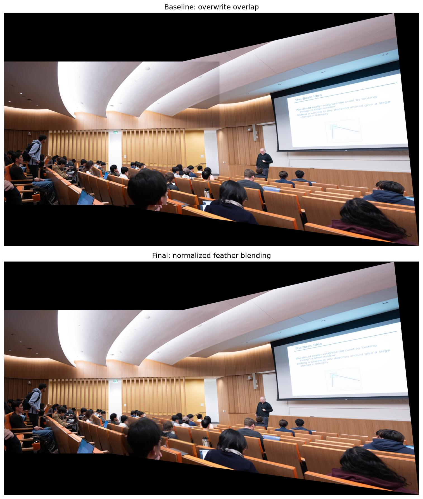
Output canvas: 2913 x 1637; origin (0, -341). Black exterior regions are outside all valid source images.
Each source receives an edge-distance weight, which is warped using the same H. The output is sum(weight x color) / sum(weight). Weight normalization preserves brightness and prevents dark fringes at boundaries. This reduces abrupt exposure seams but cannot remove moving people or parallax ghosting.
Outdoor courtyard
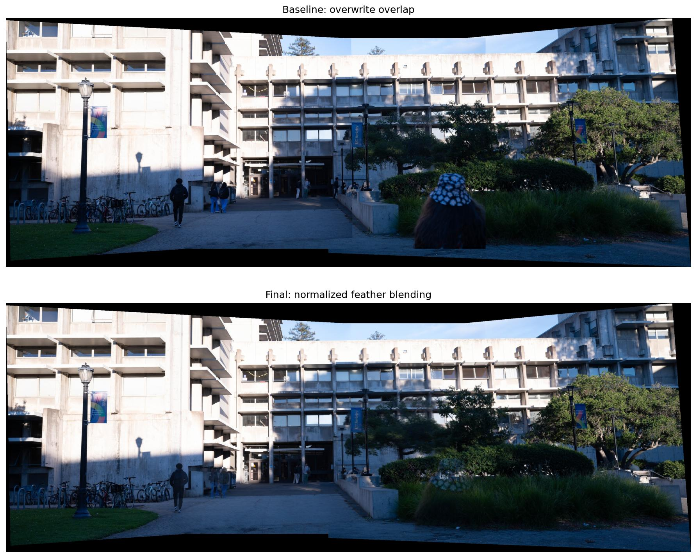
Canvas 3274 x 1190; origin (-780, -97). 1,491,642 pixels receive two or more source contributions.
Both outer images map directly into image 2. The existing bilinear inverse sampler and edge-distance feather weights are used for all three images. The continuous building/window edges demonstrate registration; moving people and near-field geometry may still double. The output keeps the complete finite canvas rather than cropping away source content.
Indoor atrium
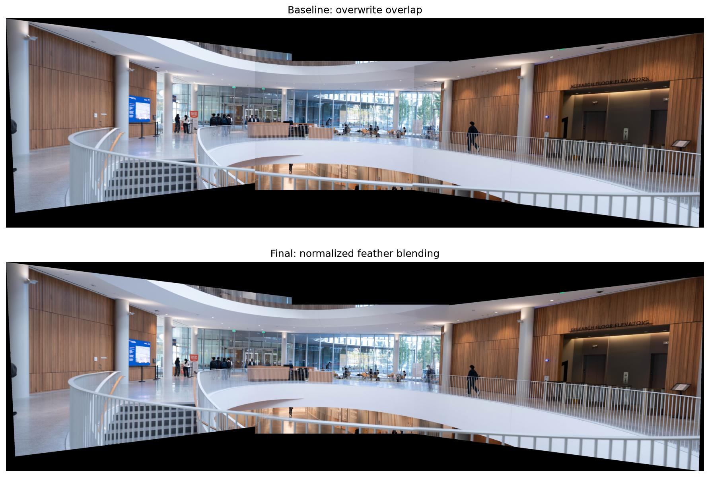
Canvas 5435 x 1631; origin (-1939, -333). 545,366 pixels receive two or more source contributions.
Both outer images map directly into image 2. The existing bilinear inverse sampler and edge-distance feather weights are used for all three images. The continuous building/window edges demonstrate registration; moving people and near-field geometry may still double. The output keeps the complete finite canvas rather than cropping away source content.
A different projection surface
The left image pair is also projected onto a cylinder, using a chosen focal length f=1100 processing pixels and the reference image center. This is an uncalibrated visual choice.
s = f atan((u-cx)/f) t = f (v-cy) / sqrt((u-cx)^2 + f^2) Inverse: u = cx + f tan(s/f) v = cy + t / cos(s/f)
Each cylindrical output coordinate is converted into the reference camera plane, then through each inverse H into an original source image. Colors are sampled once from the original processing images and feathered. The planar panorama is not resampled a second time.
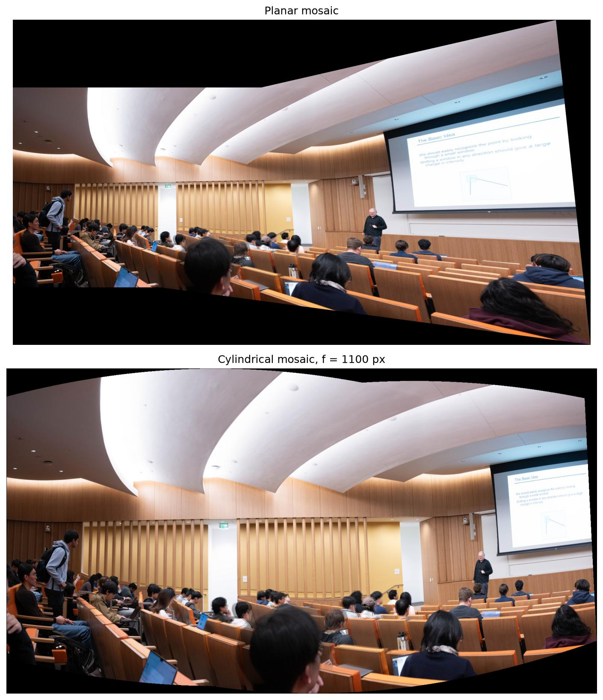
The cylindrical view reduces stretching toward the sides but changes the shape of horizontal lines and the image boundary. It does not correct errors in H, camera translation, or moving people, and is not a calibrated 360-degree panorama.